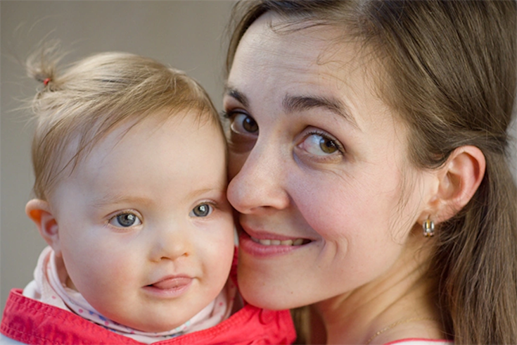

Tématem AV je “Co je cíl”. Co je cílem Tvého života? Předpokládám, že se to nějakým způsobem měnilo.
Nevím, tolik jsem to nevnímala, ale asi se to měnilo. Cíl je prostě se dostat do nebe, a to nejen já, ale i mí blízcí, což není úplně malý sen. To je takový ten hlavní cíl, který se snažím nebo snažíme žít.
Bylo hrozně hezké, co mi řekl jednou jeden kněz, když se Sárinka narodila. Protože má Downův syndrom, věděli jsme, že tam bude i nějaká mentální retardace a nějaké problémy.
Cíl je prostě se dostat do nebe, a to nejen já, ale i mí blízcí, což není úplně malý sen
O O Downících se obecně ví, že jsou to takové ty šťastné a bezstarostné děti, nejsou vůbec podlé, nemají v sobě žádnou lest, což je asi spojené s retardací, ale i s tím, jak jsou empatičtí a sociálně zdatní. A ten kněz mi řekl, že to jsou andělé na zemi a že my bychom se měli učit od nich a oni by měli žehnat nám. A tak jsem si uvědomila, že je to vlastně hrozně pěkné, pokud to tak všechno bude. Protože cílem pro rodiče je taky to, aby se do nebe dostaly jejich děti.
Já osobně mám taky ten cíl se dostat do nebe, ale člověk si musí klást i takové mezistupně, aby věděl, co už splnil a jestli je na správné cestě. Cítila jsi to podobně, např. když jsi jela někam jako dobrovolník, že sis splnila nějaký ten cíl, nějaký mezník?
Pro mě to byl obrovský mezník, to je pravda. Člověka to nějak změní a myslím a doufám, že určitě k dobrému a že to určitě mělo velký smysl. Je pravda, že když jsme u těch cílů, tak teď je to samozřejmě jiné než dřív. Když má člověk rodinu, je prostě cíl to, aby rodina byla najezená a bylo vypráno, vyžehleno.Dřív to bylo jiné. Při studiu je škola to zásadní a člověk by se měl snažit ji dokončit.
Každý má na tomhle světě jinou úlohu, někdo dělá tohle a třeba skrz to, že jede někam do zahraničí, bude mít pak větší touhu pomáhat doma.
Teď vidím změnu v tom, že dřív jsem byla hodně zaměřená na pomoc rozvojovým zemím a pamatuju si na jeden zlom, kdy jsem měla za cíl ten projekt Darujme vzdělání a nějak ho dotáhnout tak, aby byl pořádně rozjetý a aby přinášel dobro a fakt pomáhal. Pamatuji si, jak jsem jednou přednášela o Kongu na vysoké škole. Vyučující ji potom okomentoval tak, že je to sice moc hezké pomáhat v Kongu, ale že mu přijde absurdní, že všichni chtějí pomáhat tak daleko, když pomoc potřebují lidé i u nás. On sám má postiženou holčičku, které nemůže sehnat asistenty. Tento komentář mě zamrzel, protože každý na tomhle světě máme jinou úlohu, někdo pomáhá doma a někdo potřebuje cestu do zahraničí, aby měl pak větší touhu pomáhat doma. A teď vidím i skrz Sárinku, že mám zase větší potřebu pomáhat v komunitě Downova Syndromu. Svůj cíl a svoje naplnění vidím právě třeba v blogu o Sárince. Chtěla bych se více realizovat v komunitě Downova syndromu a víc šířit povědomí o této poruše.
To je právě to, co mě fascinovalo. Četl jsem příspěvek na Tvém blogu (odkaz) od nějaké paní, které se narodila třetí holčička - jak se to dozvěděla, že má DS a byli z toho úplně paf, chtěli ji opustit, což mi přišlo šílené. Ale bylo strašně krásné, jak se dostali k tvému blogu a teď je to super. Tak mi právě přijde, že lidi jsou ohledně DS takoví opatrní a mají pocit, že to je něco špatného...
Je to tak. Protože neví, je tam strašná míra nevědomosti.
Ale u Tebe jsem si vždycky říkal, jak to berete i s manželem skvěle, ty píšeš blog, chcete zvyšovat lidem povědomí o DS a připadá mi to jako krásný cíl života...
Jo, je to teď naplnění mého osobního života, protože se tomu věnuju ve svém volném čase, byť ho není tolik. Mě to opravdu naplňuje, takže v tom vidím cíl a myslím si, že to má smysl. Už mi psalo hodně maminek, třeba nových dětí s DS, které děkovaly za ten blog, to mě vždycky strašně potěší. Ale jenom chci říct, že to pro nás ze začátku nebylo vůbec jednoduché. Vůbec to nebylo hned, že bychom si řekli „Jo, super, máme Downíka”. Člověk si k tomu musel najít cestu.
Asi jste taky nebyli vůbec informováni.
Právě, je dostupných strašně málo informací. To je jeden z důvodu, proč jsem ten blog založila. V češtině je strašně málo pozitivních informací.
Jaké to bylo po porodu, po tom zjištění?
Po porodu na tom bylo asi nejtěžší to, že mi Sárinku hned odvezli, protože měla problém i s dýcháním a já jsem byla ve Frýdku, ona v Ostravě-Porubě na JIP. Vůbec jsme si to neuvědomovali, řekli nám, že má možná DS a že má špatné srdíčko. Byla někde pryč a my - prvorodiče - jsme vůbec nechápali, co se děje. Ale hodně mi pomohl manžel, Bohu díky za něj, že on bere ty věci jinak, s takovým humorem, nadhledem.
Když jsem Sárinku viděla hned po porodu, ještě před tím, než nám to oznámili lékaři, napadlo mě, že má DS. V Praze jsem totiž pomáhala v jedné neziskovce, kde pracovali s Downíky. Řekla jsem to Danovi (manželovi). On odpověděl: „No, tak bude mít stejný iniciály jako já." Manžel se totiž jmenuje Daniel Sochora a Downův Syndrom. On to vždycky takhle řekne, takže jsme si z toho tak nějak dělali srandu - že založí kapelu Downův svět, a takové vtipy.
Ale říkali jsme si, že pro nás bylo nejtěžší v tu chvíli to, že jsme k tomu právě neměli žádné informace. Já jsem s lidmi s DS pracovala, ale nikdy jsem si o tom nehledala žádné informace. Báli jsme se reakce okolí, že nás budou litovat, což jsme strašně nechtěli, takovou tu lítost, která oslabuje.
Říkali jsme si, že my to nějak zvládneme, že to není nic hrozného, ale báli jsme se toho, jak to přijmou naši blízcí, nejen naše rodiny, ale i farnost, okolí. Což taky bylo těžké, vím, že to všichni obrečeli, třeba taťka říkal: “Nevěř genetikům, žádný DS nemá, já nevěřím.” A já mu říkám “Tati, ty o tom vůbec nic nevíš.” A mamka brečela, a pomalu jsem ještě já utěšovala je. Bylo to těžké, ale dost nám pomohlo, že jsme to víceméně všem dali vědět, dali jsme to na facebook celkem brzo, takže to všichni věděli, než se s námi setkali, což bylo lepší, že si to mohli nějak zpracovat v sobě.
I my jsme si to oba dva s Danem obrečeli, protože člověk měl nějaké představy. V těhotenství jsme si třeba říkali, ať jí pouštím Mozarta, protože to rozvíjí lidský mozek, a že bude vrcholová atletka, což třeba jednou bude, že. Ale měli jsme nějaké představy a možná to máme za to, že jsme si říkali, jak to bude všecko nalajnované a pán Bůh nám ukázal „nenene, to nejste vy, kdo to řídí”. Takže tak.
Ale měli jsme nějaké představy a možná to máme za to, že jsme si říkali, jak to bude všecko nalajnované a Pán Bůh nám ukázal - nenene, to nejste vy, kdo to řídí.
Ze začátku bylo nejtěžší, že jsme nebyli spolu. Že já jsem byla v porodnici, Sárinka byla v Ostravě a Dan byl sám doma. To bylo hrozně těžké. Protože když jsou lidi spolu, když jsme s ní a vidíme ji, tak to není vůbec tak těžké to zvládnout a přijmout, jako když jsme nebyli s ní. Protože já jsem ji viděla chviličku, hnedka mi ji odvezli a já jsem jen věděla, že má možná DS, a to bylo fakt hrozně těžké. Ale potom jak jsme si ji přivezli domů a byli jsme spolu, tak už to bylo dobré.
Nebylo to hned, že bych s tím byla úplně smířená, to ne, ale hledala jsem si strašně moc informací, protože jsem je neměla, a právě v angličtině jsem toho našla hodně, v češtině to bylo často strašně negativistické. Ne vždycky to bylo negativní , ale existuje právě jedna skupinka na FB, kde je asi 500 rodin s DS, a to je obrovská podpora pro nové rodiče, ale tam jsem se pak dostala asi až po půl roce, ze začátku jsem o tom vůbec nevěděla. Později jsme se seznámili s nějakými lidmi z okolí a když má člověk pak kontakt s těmi dětmi se stejnou jinakostí, tak je to lepší. A myslím si, že mi v přijetí toho hodně pomohla víra. A jak to všichni vzali super.
Mluvila jsi o strachu z reakce okolí. Jak se na to dívali, jak Tys to cítila?
Že to byly zbytečné obavy. Jako samozřejmě byli lidi, kteří přišli a říkali “Jé, to mě mrzí”. A když nás někdo začal litovat, tak já jsem se hnedka rozbrečela, protože prostě to bylo hrozně čerstvé a ta lítost k tomu, takže člověk spíš potřeboval zdravej přístup s humorem a někoho, kdo rozumí té situaci, a takových lidí moc není. Takže i proto mám ten blog, aby se tyto informace rozšířily.
Co pro dosažení svých cílů děláš a jak tomu přistupuješ?
Nezodpovědně (smích). Tak snažím se aktualizovat blog. Pak bych jednou ráda viděla, že Sárinka bude dobře integrovaná ve společnosti, takže se snažíme nastudovat nějaké metody, jak s ní pracovat, byť je ještě malá. Máme nějaké knížky o kognitivních funkcích a tak. A snažíme se rozvíjet ten potenciál.
Dále v rámci šíření povědomí o Downově syndromu teď třeba chystáme krátký videoklip pro světový Den DS (21.3.2019) atd.

Tys vlastně ten Sářin hlas - Tvůj blog, dělala kvůli tomu, že na českém internetu je “mezera na trhu”?
Ano, protože jsem takhle objevila 3, 4 a pak jeden úplně skvělý americký blog, který byl víceméně o rodině kluka s DS, ukazovali tam jeho život, sdíleli jeho fotky, jeho pokroky, co s ním dělají, jakým stylem s ním pracují, a bylo vidět, že to je šťastná a spokojená rodina. A to mi tady hrozně chybělo, sledovat život nějaké rodiny.
Googlovala jsem, co třeba umí 6měsíční miminko s DS a nic jsem nenacházela. No a právě proto každé dva měsíce děláme nové video, aby byly dostupné informace, aby lidi viděli, že ten život se dá žít hezky s tím dítětem.
Takže jsem si říkala, že někomu mohou informace z blogu pomoci, že se rozhodne na ten potrat nejít.
Jak já to vnímám, tak si lidi často myslí, že to musí být hrozné takhle žít život s DS, a pak člověk přijde na ten Váš blog a říká si: “To je úplně normální.”
Tak to jsem ráda, že to tak je vnímáno. Vím, že mi to říkalo víc lidí, že to je super a je to motivace a takový motor pro mě, že to má smysl dělat, i když někdy si třeba člověk říká, jestli to někdo vůbec čte. Naštěstí mám na blogu statistiky a vidím, že tam lidi chodí, jinak by to bylo těžké něco psát a vůbec nevědět, jestli to má nějakou odezvu nebo smysl. Takže jsem ráda a snad to pomůže co nejvíce rodinám.
A pomáhá to i v oblasti prenatální diagnostiky. Vím, že jsou určitě rodiče, kteří když se dozvědí, že možná budou dítě s DS, si hledají informace. To je svým způsobem ještě důležitější, protože mě hrozně mrzí, jaká je velká míra potratovosti v tomhle případě, když se rodina dozví, že dítě možná bude mít DS, a to i když testy nejsou vůbec přesné.
U triple testu, to je ve 13. týdnu, když vyjde pravděpodobnost DS a když vyjde vyšší, pošlou matku na odběr plodové vody, což je amniocentéza, kde už je více než 90% úspěšnost, ale je tam riziko potratu. Takže někteří lidé tam ani nechodí, a rovnou jdou na potrat po tom triple testu, který je ale dost často falešně pozitivní nebo falešně negativní. Takže jsem si říkala, že někomu mohou informace z blogu pomoci, že se rozhodne na ten potrat nejít.
Jak bys třeba popsala hlavní rozdíl mezi “normálním” dítětem a dítětem s DS?
Já nevím, já jiné nemám :) Ale ne, možná je teď výhoda, že je první a nemám porovnání a že jsem strašně ráda, za to, co je, a když udělá nějaký ten pokrok. Ale samozřejmě vidím i děti kolem sebe, třeba ségra má děti. Ze začátku v tom prvním roce se s ním musí cvičit, což musíš i se zdravými dětmi, protože tam hodně bývá hypotonie, kvůli tomu že mají nízké svalové napětí a to je právě důvod, proč Sárinka ještě ani neleze.
A je hypermobilní, je pro ni těžší se ty pohyby naučit. Potom jsme od malička absolvovali návštěvy u doktorů - v tom první roce jsme museli k neurologovi, kardiologovi stejně jako rizikoví novorozenci, a pak záleží, jestli k tomu jsou přidružené nějaké další vady - což naštěstí Sárinka nemá.
Dále nějaké to cvičení, na plavání jsme chodili, což bychom ale chodili i normálně, jinak mám v sobě ten pocit, že bych s ní měla víc pracovat, protože to jsem někde četla, to nemám ze své hlavy, že zdravému dítěti řekneš 3x, že pes dělá HAF a ono to ví a dítěti s DS to musíš říct třeba 100x, nebo i vícekrát, aby se to naučilo. A to taky ale záleží na tom, jak bude učenlivé.
A jinak ten rozdíl, skrze komunitu DS si najdeš spoustu nových přátel, mám vážně dobré kamarádky, zítra se zrovna všechny uvidíme. Je to takové, že to lidi spojí a člověk má určitě jiný pohled na svět, že život není o tom, aby to dítě bylo nejlepší ve třídě, aby bylo nejlepší ve sportu a hudbě, protože to asi nebude, i když třeba překvapí :)
Každý má svoji cestu, a každý tady má svoje místo
Ale prostě jak to tam psala v tom článku ta maminka, o které jsi mluvil, tak milovat bez podmínek. Ale jinak u takhle malého dítěte ten rozdíl tak obrovský není. Teď třeba už nechodíme k těm specialistům, ona je v pohodě, chodíme na rehabilitace, ale tam chodí i kamarádky, co mají zdravé dítě.

Takže se Sárinkou máš ten cíl, aby byla integrovaná a ...
Aby měla samostatný život, v rámci možností, aby si našla práci, aby měla na samostatné bydlení, i kdyby to bylo nějaké chráněné a aby byla schopna samostatně vést život. Sárinka už má dokonce ženicha (smích) - ne, dělám si srandu, ale byli jsme v lázních, tak tam byli takoví šikovní kluci, dvojčata, taky s DS, což je taky docela rána osudu, když jsou oba dva s DS, ale suproví, takže Sárinka už má Vojtíška :) Prostě uvidíme, jak to jednou bude.
Co bys poradila takovým lidem po výšce? :)
Nevím, jestli bych měla radit, každý má svoji cestu, a každý tady má svoje místo. Přijde mi, že hodně důležité nejen pro studenty, ale i právě pro všechny, je mít nějaké společenství, kam člověk patří a které ho někam posouvá, ať už je to třeba fungující farnost, nebo nějaké spolčo.
A také se modlit, protože neexistuje univerzální návod a každý máme jiné možnosti a jiné schopnosti, jiné dary.
A také se modlit, protože neexistuje univerzální návod a každý máme jiné možnosti a jiné schopnosti, jiné dary. Pro někoho to může být to, že se realizuje ve farním časopise, někdo chodí pomáhat do hospice, i kdyby to bylo jednou za měsíc, tak to někoho může hodně naplňovat.
Já jsem ještě před Sárinkou chodila pomáhat do hospice, ale vnímala jsem, že to nebyla moje cesta. Ale vím, že jsou lidi, které to úplně naplňuje. A věřím, že každý má své místo, jen si ho najít právě skrz modlitbu a skrz společenství a vhodné přátele.
Děkujeme moc Ivet za rozhovor a přejeme Ti hodně Božího požehnaní k dosažení cílů Tvé rodiny a Tvého snažení!
Možné úkoly pro Tebe
- Sdílet tenhle článek.
- Překlady videí a článků (z angličtiny, popř. z jiných jazyků) (napiš nám).
- Tvorba českých titulků k anglickým videím
- Tvorba nového loga pro blog Sářin hlas
- Tvorba kvalitních webových stránek pro organizaci Downova syndromu
- Složení písně o DS - to je celkem výzva, ideálně i nazpívat, to je pro nějakého profi zpěváka či kapelu.
- Nafotit kvalitní hromadné fotky dětí s DS